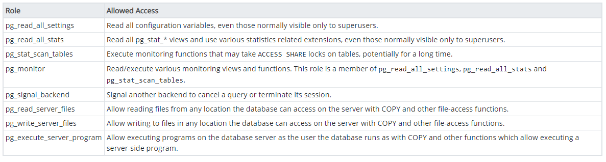

Administrasi Pengguna pada Basisdata¶
Pada basisdata enterprise, concurrent use atau pemakaian bersama menjadi kebutuhan utama pada sistem yang berjalan. Sama seperti pada sistem operasi Linux yang sudah dibahas sebelumnya, terdapat pengaturan untuk memberikan izin pada basisdata yang memungkinkan pengguna berbeda mempunyai izin akses yang berbeda.
Roles, Group dan Priviledges¶
Izin pada pengguna di PostgreSQL mirip dengan pemberian izin pada Linux: pembagian peran (role) dapat diberikan pada user maupun grup, dengan tiap role memiliki hak akses (priviledges) yang berbeda

Fig. 23 Roles pada PostgreSQL dapat diberikan pada grup maupun pada user¶
Berikut adalah beberapa peran yang dapat diberikan pada pengguna atau grup:
SUPERUSER - SUPERUSER database perlu mendapat perhatian khusus. Intinya, peran dengan atribut ini dapat membuat SUPERUSER lain. Faktanya, atribut ini diperlukan untuk membuat peran SUPERUSER lainnya. Karena peran dengan atribut ini mengabaikan semua pemeriksaan izin, berikan hak istimewa ini dengan bijaksana.
CREATEDB - Memungkinkan peran untuk membuat database.
CREATEROLE - Dengan atribut ini, peran dapat mengeluarkan perintah CREATE ROLE, yaitu membuat peran lain.
LOGIN - Memungkinkan kemampuan untuk login. Nama peran dengan atribut ini dapat digunakan dalam perintah koneksi klien.
Pada PostgreSQL, pengaturan ini dapat dijumpai pada menu Create Roles, seperti berikut:
{kind=link}
Fig. 24 Menu pengaturan Roles pada PostgreSQL¶
Pengaturan hak akses pada PostgreSQL¶
Dengan PostgreSQL, Anda dapat membuat pengguna dan peran dengan izin akses secara granular. Pengguna atau peran baru harus secara selektif diberikan izin yang diperlukan untuk setiap objek database. Ini memberi banyak kekuatan kepada pengguna akhir, tetapi pada saat yang sama, itu membuat proses pembuatan pengguna dan peran dengan izin yang benar berpotensi rumit.
PostgreSQL memungkinkan Anda memberikan izin langsung ke pengguna database. Namun, sebagai praktik yang baik, Anda disarankan untuk membuat banyak peran dengan kumpulan izin tertentu berdasarkan aplikasi dan persyaratan akses. Kemudian tetapkan peran yang sesuai untuk setiap pengguna. Peran harus digunakan untuk menerapkan model dengan hak istimewa terendah untuk mengakses objek database. Pengguna master pada PostgreSQL harus digunakan hanya untuk tugas administrasi database seperti membuat pengguna, peran, dan database lain. Pengguna master tidak boleh digunakan oleh aplikasi. Berikut adalah contoh pembagian peran dan pemberian izin:
{kind=link}
Fig. 25 Contoh pengaturan untuk pembagian peran pada PostgreSQL¶
Membuat pengguna dan grup baru¶
Pengguna pada PostgreSQL dibuat melalui query berikut:
CREATE USER username [ [ WITH ]
SYSID uid
| [ ENCRYPTED | UNENCRYPTED ] PASSWORD 'password'
| CREATEDB | NOCREATEDB
| CREATEUSER | NOCREATEUSER
| IN GROUP groupname [, ...]
| VALID UNTIL 'abstime' ]
Sebagai contoh, perintah berikut akan membuat pengguna baru dengan nama ‘user1’ dan password ‘password1’:
CREATE USER user1 WITH PASSWORD 'password1';
Adapun grup merupakan salah satu cara untuk mengelompokkan pengguna tertentu. Grup dapat dibuat dengan perintah berikut:
CREATE GROUP sales WITH USER user1;
Menerapkan peran baru¶
Role merupakan cara PostgreSQL mengatur batasan akses oleh pengguna. Tiap Role dapat memiliki pengaturan Priviledges yang berbeda untuk membatasi hak akses yang dapat dilakukan oleh tiap-tiap pengguna. Berikut adalah bagaimana peran dibuat dengan menggunakan bahasa SQL:
CREATE ROLE user_viewer WITH LOGIN PASSWORD 'pass2';
PostgreSQL 13 telah dilengkapi dengan beberapa roles default yang dapat digunakan, yaitu sebagai berikut:

Peran default tersebut dapat diberikan pada pengguna tertentu melalui perintah:
GRANT pg_read_server_files TO user1;
Demikian pula, perintah tersebut dapat dilakukan untuk grup, sehingga hak akses menjadi milik semua pengguna pada grup tersebut.
Latihan: Menggunakan Pengaturan Roles untuk membatasi akses¶
Untuk latihan ini, kita akan gunakan tabel anggota pada latihan sebelumnya. Kita akan membuat skema pengaturan pengguna melalui grup, user dan roles untuk membatasi akses pada tabel anggota. Kita akan menggunakan Query pada PostgreSQL untuk keperluan ini (bukan antarmuka PostgreSQL - menggunakan Query relatif lebih sederhana).
Langkah pertama adalah membuat role baru untuk pengguna kita nantinya. Role ini diatur agar hanya dapat membaca tabel tertentu:
CREATE ROLE readonly_tabel; GRANT CONNECT ON DATABASE latihan TO readonly_tabel; GRANT USAGE ON SCHEMA public TO readonly_tabel;
Tiga perintah di atas berfungsi untuk membuat role baru, memberikan hak akses atas basisdata
latihankepada role tersebut, serta memberi akses pada skemapublicyang terdapat di dalam basisdata latihan. Hasilnya adalah sebagai berikut:Kita akan membatasi akses ke tabel
anggotaagar rolereadonly_tabelhanya dapat membaca kolom id dan jenis kelamin saja.GRANT SELECT (no_id, jenis_kelamin) ON TABLE public.anggota TO readonly_tabel;
pada perintah di atas, user budi hanya dapat mengakses kolom no_id dan jenis_kelamin
Membuat pengguna baru untuk akses dengan role ini
CREATE USER budi WITH PASSWORD 'secret'; GRANT readonly_tabel TO budi;
Lakukan koneksi ke PostgreSQL dengan user baru ini. Gunakan antarmuka PostgreSQL untuk Logout, kemudian login kembali dengan user
budidan passwordsecret.Buat query untuk memilih seluruh isi tabel anggota:
SELECT * FROM TABLE anggota
hasilnya adalah error karena user
buditidak diizinkan untuk mengakses seluruh isi tabel:Apabila kita hanya memilih kolom
no_iddanjenis_kelamin, maka hasilnya:
Latihan di atas menunjukkan bagaimana pengaturan role pada pengguna dapat digunakan untuk membatasi akses pada basisdata, tabel, kolom maupun view. Dengan demikian kita dapat mengatur hak akses yang cukup kompleks untuk berbagai kebutuhan.
Mengatur koneksi multi-pengguna¶
Apabila terdapat beberapa pengguna, maka hak akses (priviledges) untuk tiap pengguna ini dapat ditentukan dengan mengaturnya melalui roles, group maupun langsung ke pengguna itu sendiri.
Latihan: Pengaturan Priviledges¶
PostgreSQL memiliki dua tingkat otorisasi, satu di tingkat database, yang disebut otentikasi berbasis host, dan satu lagi di tingkat yang lebih detil pada tabel, view, dan sequence. Adapun daftar permission yang dapat diberikan pada pengguna adalah:
Berikut adalah contoh pemberian izin kepada pengguna untuk mengakses basisdata tertentu:
GRANT { { SELECT | INSERT | UPDATE | DELETE | RULE | REFERENCES | TRIGGER }
[,...] | ALL [ PRIVILEGES ] }
ON [ TABLE ] tablename [, ...]
TO { username | GROUP groupname | PUBLIC } [, ...] [ WITH GRANT OPTION ]
Seagai contoh, untuk memberikan izin pada ‘bob’ untuk memodifikasi tabel supplier:
GRANT INSERT, UPDATE, DELETE ON TABLE suppliers TO bob;
Latihan: Terhubung dengan server basisdata¶
Sebagai latihan, gunakan koneksi berikut untuk terhubung pada basisdata PostGIS yang tersimpan di Amazon Lightsail:
host: 54.254.9.31 port: 5432
user 1:
username: view_only
password: ‘viewer’
role: pg_read_server_file
user 2:
username: editor_data
password: ‘editor’
role: pg_write_server_file
user 3 (SUPERUSER):
username: postgres
password: ‘postgres’